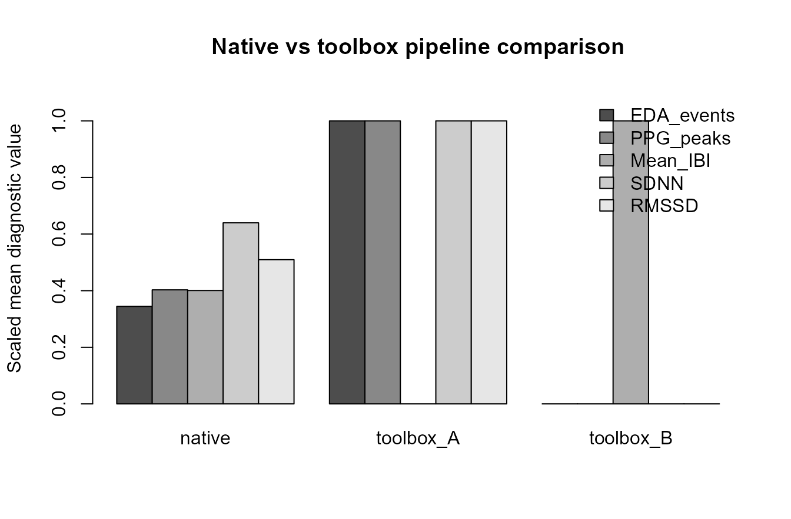
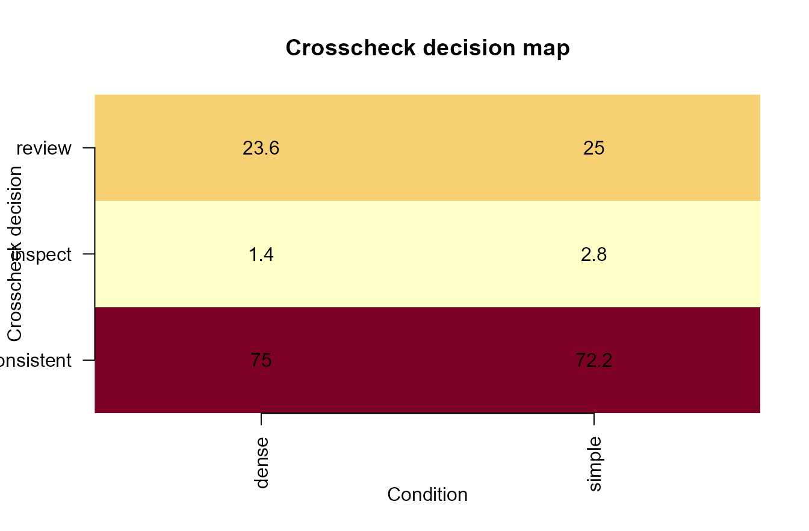
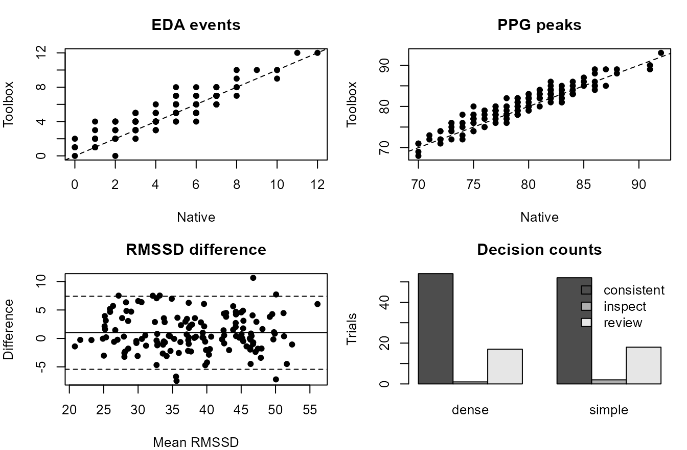

Toolbox crosscheck visuals
Source:vignettes/articles/toolbox-crosscheck-visuals.Rmd
toolbox-crosscheck-visuals.RmdPurpose
This article demonstrates a plot-rich toolbox-crosscheck workflow for
gpbiometrics projects.
The workflow is diagnostic and reproducibility-oriented. The figures compare native and external-toolbox-style outputs for EDA event counts, PPG peaks, IBI/HRV summaries, method agreement, method-rank sensitivity, decision mapping, and compact dashboard-style reporting. These outputs are crosscheck, sensitivity, pipeline-comparison, quality-control, and reproducibility diagnostics. They should not be interpreted as direct evidence of emotion, stress, attention, workload, health status, clinical state, diagnosis, autonomic state, or psychological response.
Synthetic crosscheck results
The example uses synthetic pipeline outputs so that the article is reproducible and does not depend on private recordings or external software installations.
participants <- sprintf("P%02d", 1:24)
trials <- seq_len(6)
pipelines <- c("native", "toolbox_A", "toolbox_B")
trial_grid <- expand.grid(
participant_id = participants,
trial_id = trials,
KEEP.OUT.ATTRS = FALSE,
stringsAsFactors = FALSE
)
trial_grid$condition <- ifelse(trial_grid$trial_id %% 2 == 0, "dense", "simple")
trial_grid$base_eda_events <- rpois(nrow(trial_grid), lambda = ifelse(trial_grid$condition == "dense", 5.4, 3.8))
trial_grid$base_ppg_peaks <- round(rnorm(nrow(trial_grid), mean = ifelse(trial_grid$condition == "dense", 82, 76), sd = 3.5))
trial_grid$base_mean_ibi_ms <- rnorm(nrow(trial_grid), mean = ifelse(trial_grid$condition == "dense", 780, 825), sd = 28)
trial_grid$base_sdnn_ms <- rnorm(nrow(trial_grid), mean = ifelse(trial_grid$condition == "dense", 42, 50), sd = 7)
trial_grid$base_rmssd_ms <- rnorm(nrow(trial_grid), mean = ifelse(trial_grid$condition == "dense", 34, 42), sd = 6)
make_pipeline <- function(pipeline_name) {
eda_bias <- switch(pipeline_name, native = 0.0, toolbox_A = 0.3, toolbox_B = -0.2)
ppg_bias <- switch(pipeline_name, native = 0.0, toolbox_A = 0.8, toolbox_B = -0.6)
ibi_bias <- switch(pipeline_name, native = 0.0, toolbox_A = -4.0, toolbox_B = 5.5)
hrv_bias <- switch(pipeline_name, native = 0.0, toolbox_A = 1.2, toolbox_B = -1.5)
data.frame(
participant_id = trial_grid$participant_id,
trial_id = trial_grid$trial_id,
condition = trial_grid$condition,
pipeline = pipeline_name,
eda_events = pmax(0, round(trial_grid$base_eda_events + eda_bias + rnorm(nrow(trial_grid), 0, 0.55))),
ppg_peaks = pmax(0, round(trial_grid$base_ppg_peaks + ppg_bias + rnorm(nrow(trial_grid), 0, 1.1))),
mean_ibi_ms = trial_grid$base_mean_ibi_ms + ibi_bias + rnorm(nrow(trial_grid), 0, 8),
sdnn_ms = pmax(1, trial_grid$base_sdnn_ms + hrv_bias + rnorm(nrow(trial_grid), 0, 2.5)),
rmssd_ms = pmax(1, trial_grid$base_rmssd_ms + hrv_bias + rnorm(nrow(trial_grid), 0, 2.3)),
stringsAsFactors = FALSE
)
}
crosscheck <- do.call(rbind, lapply(pipelines, make_pipeline))
native <- crosscheck[crosscheck$pipeline == "native", ]
toolbox_a <- crosscheck[crosscheck$pipeline == "toolbox_A", ]
agreement <- merge(
native,
toolbox_a,
by = c("participant_id", "trial_id", "condition"),
suffixes = c("_native", "_toolbox")
)
head(crosscheck)
#> participant_id trial_id condition pipeline eda_events ppg_peaks mean_ibi_ms
#> 1 P01 1 simple native 3 79 830.0930
#> 2 P02 1 simple native 2 74 836.0971
#> 3 P03 1 simple native 2 76 845.7972
#> 4 P04 1 simple native 3 70 813.6694
#> 5 P05 1 simple native 4 72 774.3397
#> 6 P06 1 simple native 1 79 812.7252
#> sdnn_ms rmssd_ms
#> 1 51.02963 53.08583
#> 2 64.99267 29.28580
#> 3 55.46637 40.90353
#> 4 38.43722 30.59067
#> 5 48.09603 48.61406
#> 6 56.84463 47.14147Native vs toolbox pipeline comparison
A pipeline-comparison plot gives a compact overview of whether methods produce similar summary ranges.
scale01 <- function(x) {
rng <- range(x, na.rm = TRUE)
if (diff(rng) == 0) return(rep(0.5, length(x)))
(x - rng[1]) / diff(rng)
}
pipeline_summary <- aggregate(
cbind(eda_events, ppg_peaks, mean_ibi_ms, sdnn_ms, rmssd_ms) ~ pipeline,
data = crosscheck,
FUN = mean
)
metric_matrix <- rbind(
EDA_events = scale01(pipeline_summary$eda_events),
PPG_peaks = scale01(pipeline_summary$ppg_peaks),
Mean_IBI = scale01(pipeline_summary$mean_ibi_ms),
SDNN = scale01(pipeline_summary$sdnn_ms),
RMSSD = scale01(pipeline_summary$rmssd_ms)
)
colnames(metric_matrix) <- pipeline_summary$pipeline
barplot(
metric_matrix,
beside = TRUE,
ylim = c(0, 1.1),
ylab = "Scaled mean diagnostic value",
main = "Native vs toolbox pipeline comparison",
legend.text = TRUE,
args.legend = list(x = "topright", bty = "n")
)
Synthetic native vs toolbox pipeline comparison.
EDA event-count agreement
Agreement plots help identify whether one event-detection approach systematically counts more or fewer EDA events than another.
plot(
agreement$eda_events_native,
agreement$eda_events_toolbox,
pch = 16,
xlab = "Native EDA event count",
ylab = "Toolbox EDA event count",
main = "EDA event-count agreement"
)
abline(0, 1, lty = 2)Synthetic EDA event-count agreement.
PPG peak and IBI agreement
PPG crosschecks should review both peak counts and interval summaries because similar peak counts can still produce different interval-level outputs.
op <- par(mfrow = c(1, 2), mar = c(4, 4, 3, 1))
plot(
agreement$ppg_peaks_native,
agreement$ppg_peaks_toolbox,
pch = 16,
xlab = "Native PPG peaks",
ylab = "Toolbox PPG peaks",
main = "Peak-count agreement"
)
abline(0, 1, lty = 2)
plot(
agreement$mean_ibi_ms_native,
agreement$mean_ibi_ms_toolbox,
pch = 16,
xlab = "Native mean IBI (ms)",
ylab = "Toolbox mean IBI (ms)",
main = "Mean-IBI agreement"
)
abline(0, 1, lty = 2)Synthetic PPG peak and IBI agreement.
par(op)HRV feature agreement
HRV feature agreement displays help determine whether downstream summaries are stable across alternative interval-processing choices.
op <- par(mfrow = c(1, 2), mar = c(4, 4, 3, 1))
plot(
agreement$sdnn_ms_native,
agreement$sdnn_ms_toolbox,
pch = 16,
xlab = "Native SDNN (ms)",
ylab = "Toolbox SDNN (ms)",
main = "SDNN agreement"
)
abline(0, 1, lty = 2)
plot(
agreement$rmssd_ms_native,
agreement$rmssd_ms_toolbox,
pch = 16,
xlab = "Native RMSSD (ms)",
ylab = "Toolbox RMSSD (ms)",
main = "RMSSD agreement"
)
abline(0, 1, lty = 2)Synthetic HRV feature agreement.
par(op)Bland-Altman-style diagnostic plot
A Bland-Altman-style display shows the average of two methods against their difference. Here it is used as a technical diagnostic, not as a claim of method interchangeability.
agreement$rmssd_mean <- rowMeans(agreement[, c("rmssd_ms_native", "rmssd_ms_toolbox")])
agreement$rmssd_diff <- agreement$rmssd_ms_toolbox - agreement$rmssd_ms_native
diff_mean <- mean(agreement$rmssd_diff)
diff_sd <- sd(agreement$rmssd_diff)
plot(
agreement$rmssd_mean,
agreement$rmssd_diff,
pch = 16,
xlab = "Mean RMSSD across methods (ms)",
ylab = "Toolbox minus native RMSSD (ms)",
main = "Bland-Altman-style diagnostic"
)
abline(h = diff_mean, lty = 1)
abline(h = diff_mean + c(-1.96, 1.96) * diff_sd, lty = 2)
abline(h = 0, lty = 3)Synthetic Bland-Altman-style RMSSD diagnostic.
Method-rank sensitivity
Rank-sensitivity displays show whether participant or condition ordering changes across pipelines.
participant_rmssd <- aggregate(rmssd_ms ~ participant_id + pipeline, data = crosscheck, FUN = mean)
participant_rmssd$rank <- ave(
participant_rmssd$rmssd_ms,
participant_rmssd$pipeline,
FUN = function(x) rank(x, ties.method = "average")
)
rank_wide <- reshape(
participant_rmssd[, c("participant_id", "pipeline", "rank")],
idvar = "participant_id",
timevar = "pipeline",
direction = "wide"
)
plot(
rank_wide$rank.native,
rank_wide$rank.toolbox_A,
pch = 16,
xlab = "Native participant rank",
ylab = "Toolbox A participant rank",
main = "Method-rank sensitivity"
)
abline(0, 1, lty = 2)
text(rank_wide$rank.native, rank_wide$rank.toolbox_A, labels = rank_wide$participant_id, pos = 3, cex = 0.7)Synthetic method-rank sensitivity display.
Crosscheck decision map
A decision map converts agreement diagnostics into a review table that can guide inspection without hiding method-specific details.
agreement$eda_abs_diff <- abs(agreement$eda_events_toolbox - agreement$eda_events_native)
agreement$ppg_abs_diff <- abs(agreement$ppg_peaks_toolbox - agreement$ppg_peaks_native)
agreement$rmssd_abs_diff <- abs(agreement$rmssd_ms_toolbox - agreement$rmssd_ms_native)
agreement$decision <- ifelse(
agreement$eda_abs_diff <= 1 & agreement$ppg_abs_diff <= 3 & agreement$rmssd_abs_diff <= 6,
"consistent",
ifelse(agreement$eda_abs_diff <= 2 & agreement$ppg_abs_diff <= 5 & agreement$rmssd_abs_diff <= 10,
"review",
"inspect"
)
)
decision_counts <- table(agreement$condition, agreement$decision)
decision_prop <- prop.table(decision_counts, margin = 1) * 100
image(
x = seq_len(nrow(decision_prop)),
y = seq_len(ncol(decision_prop)),
z = as.matrix(decision_prop),
axes = FALSE,
xlab = "Condition",
ylab = "Crosscheck decision",
main = "Crosscheck decision map"
)
axis(1, at = seq_len(nrow(decision_prop)), labels = rownames(decision_prop), las = 2)
axis(2, at = seq_len(ncol(decision_prop)), labels = colnames(decision_prop), las = 1)
text(
rep(seq_len(nrow(decision_prop)), times = ncol(decision_prop)),
rep(seq_len(ncol(decision_prop)), each = nrow(decision_prop)),
labels = round(as.vector(decision_prop), 1)
)
Synthetic crosscheck decision map.
Compact toolbox-crosscheck dashboard
A compact dashboard can combine agreement, difference, rank, and decision diagnostics for reviewer-facing reports.
op <- par(mfrow = c(2, 2), mar = c(4, 4, 3, 1))
plot(agreement$eda_events_native, agreement$eda_events_toolbox, pch = 16, xlab = "Native", ylab = "Toolbox", main = "EDA events")
abline(0, 1, lty = 2)
plot(agreement$ppg_peaks_native, agreement$ppg_peaks_toolbox, pch = 16, xlab = "Native", ylab = "Toolbox", main = "PPG peaks")
abline(0, 1, lty = 2)
plot(agreement$rmssd_mean, agreement$rmssd_diff, pch = 16, xlab = "Mean RMSSD", ylab = "Difference", main = "RMSSD difference")
abline(h = diff_mean, lty = 1)
abline(h = diff_mean + c(-1.96, 1.96) * diff_sd, lty = 2)
barplot(t(decision_counts), beside = TRUE, ylab = "Trials", main = "Decision counts", legend.text = TRUE, args.legend = list(x = "topright", bty = "n"))
Compact synthetic toolbox-crosscheck dashboard.
par(op)Relation to gpbiometrics helpers
The same reporting pattern can be paired with package-level helpers when project data use the expected column contracts.
| task | representative_helpers |
|---|---|
| External EDA crosscheck | run_gazepoint_neurokit_eda_crosscheck(); run_gazepoint_biosppy_eda() |
| External PPG crosscheck | run_gazepoint_biosppy_ppg(); run_gazepoint_heartpy_crosscheck() |
| HeartPy-style input and review | prepare_gazepoint_heartpy_input(); export_gazepoint_heartpy_input() |
| pyHRV/RHRV input and review | prepare_gazepoint_pyppg_input(); prepare_gazepoint_rhrv_input(); export_gazepoint_rhrv_input() |
| Pipeline comparison | pipeline_comparison_dashboard(); compare_gazepoint_pyhrv_psd_methods() |
| Agreement visualization | plot_gazepoint_ppg_peak_detection(); plot_gazepoint_ppg_poincare(); plot_gazepoint_scr_events() |
| Report outputs | create_gazepoint_qc_supplement(); create_gazepoint_biometrics_report_tables() |
library(gpbiometrics)
eda_crosscheck <- run_gazepoint_neurokit_eda_crosscheck(
biometric_data,
gsr_col = "GSR",
time_col = "TIME_MS",
participant_col = "participant_id",
trial_col = "trial_id"
)
ppg_crosscheck <- run_gazepoint_heartpy_crosscheck(
biometric_data,
ppg_col = "PPG",
time_col = "TIME_MS",
participant_col = "participant_id",
trial_col = "trial_id"
)
heartpy_input <- prepare_gazepoint_heartpy_input(
biometric_data,
ppg_col = "PPG",
time_col = "TIME_MS"
)
rhrv_input <- prepare_gazepoint_rhrv_input(
biometric_data,
ibi_col = "IBI",
participant_col = "participant_id",
trial_col = "trial_id"
)
pipeline_comparison_dashboard(
native_results = native_results,
toolbox_results = toolbox_results
)Reporting recommendation
For manuscripts, technical supplements, repositories, and reviewer-facing reports, describe these figures as native-versus-toolbox crosschecks, pipeline-comparison diagnostics, agreement displays, method-sensitivity checks, and reproducibility outputs. Avoid stronger physiological, clinical, affective, workload-related, stress-related, attentional, autonomic, health-related, or psychological interpretation unless supported by validation evidence, controls, and modelling results.